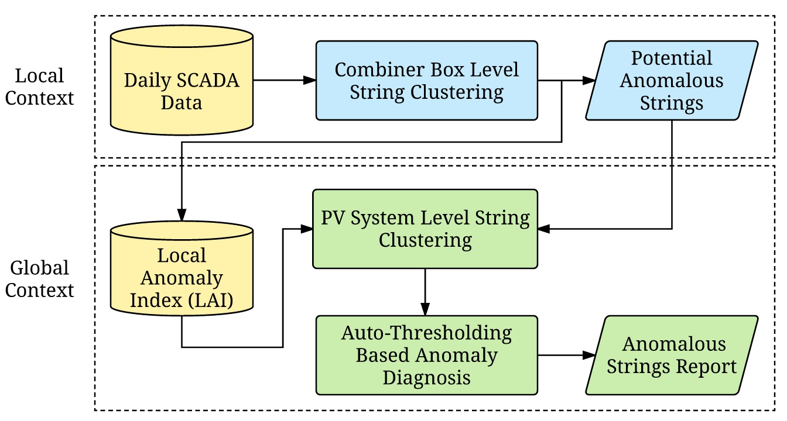

I received B.S., M.S. in Electrical Engineer from Harbin Institute of Technology, China, in 2010, 2012, respectively. I am currently pursuing the Ph.D. degree with the Department of Electrical and Computer and Energy Engineering, University of Colorado, Boulder. Advisors: Dr. Li Shang and Dr. Qin Lv. My current research interests include machine learning, data mining, wearable computing. I am a student member of IEEE.
"If we knew what we were doing, it wouldn't be called research, would it?"
- Albert Einstein
Accurate anomaly diagnosis is essential for reducing operation and maintenance cost, while improving safety and reliability of large-scale photovoltaic (PV) systems. Although many methods have been proposed, they either require extra sensing devices or suffer from high false alarm rates. In this work, we present a cost-effective hierarchical context-aware method for string-level anomaly diagnosis in large-scale PV systems. The proposed approach is based on unsupervised machine learning techniques and requires no additional hardware support beyond widely adopted supervisory control and data acquisition (SCADA) system. The effectiveness and efficiency of our proposed approach are evaluated with a 40 MW PV system. The experimental results demonstrate that the proposed approach can support string-level anomaly diagnosis with high accuracy and provide sufficient lead time for daily maintenance. 
Massive amounts of remotely sensed data are being generated at an unprecedented rate, offering new opportunities for data-driven scientific discovery. However, due to the sheer volume of remotely sensed data and the lack of effective data analytics tools, most data remain in the dark, with little to no quality assurance and limited access to high-level analytical tools. Anomaly detection, which aims to find scenarios that differ from the norm, is of particular importance when analyzing remotely sensed data. However, most previous work has focused on identifying individual anomalies, and required prior knowledge of the ground truth for supervised learning. In this work, we propose an unsupervised anomaly detection framework that requires no prior knowledge and is capable of detecting anomalous events, which we define as groups of outlier objects differing contextually from their spatial and temporal neighbors. We demonstrate the effectiveness and efficiency of the proposed framework using two satellite datasets. With this framework, we have successfully identified significant data quality issues and natural events that were subsequently validated by domain experts.
Wearables target one order of magnitude form factor reduction compared with mainstream mobile phones, and offer the potential of providing ubiquitous, personalized services to end users. However, aggressive reduction in size imposes serious limits
on battery capacity for wearable devices. In this work, we address the energy challenges faced by wearable sensing technologies, with a primary focus on the most widely used wearable sensors: MEMS-based inertial measurement units (IMUs), such
as accelerometers and gyroscopes. We first discuss technologies needed to solve the power and energy consumption challenges for wearables and then propose two data processing schemes using collaborative processing and compressive sensing to
reduce power consumption for wearables. The effectiveness of the proposed data processing schemes is evaluated using the application of quaternion computation. The result shows that compressive sensing reduces wearable device power use by 47%,
collaborative processing reduces energy consumption by 54%.
Miniature MEMS-based motion sensors enable portable high-precision kinematic analysis, but suffer from high energy consumption hence short battery lifetime, especially for continued
online analysis for running. This paper presents Gazelle, a wearable online analysis system for running that is compact, lightweight, accurate, and highly energy efficient; intended for runners of all levels. To enable long-term maintenance-free
mobile analysis for running, Sparse Adaptive Sensing (SAS) is proposed, which selectively identifies the best sampling points to maintain high accuracy while greatly reducing sensing and analysis energy overheads. Experimental results demonstrate
97.7% accuracy with 76.9% to 99% reduced energy consumption (83.6% average reduction under real-world testing) – a one-order-of-magnitude improvement over existing solutions. SAS enables > 200 days of continuous high-precision operation using
only a coin-cell battery.
Hierarchical Context-Aware Anomaly Diagnosis in Large-Scale PV Systems Using SCADA Data. IEEE International Conference on Industrial Informatics
Data Quality Screening For High-Resolution Satellite Imagery via Spectral Clustering. IEEE International Geoscience and Remote Sensing Symposium
Unsupervised detection of contextual anomaly in remotely sensed data. Remote Sensing of Environment
Gazelle: Energy-Efficient Wearable Analysis for Running. IEEE Transactions on Mobile Computing
Demonstrating Condensed Massive Satellite Datasets for Rapid Data Exploration: The MODIS Land Surface Temperatures of Antarctica
An Unsupervised Anomalous Event Detection and Interactive Analysis Framework for Large-scale Satellite Data. AGU Fall Meeting Abstracts
Condensing Massive Satellite Datasets For Rapid Interactive Analysis. AGU Fall Meeting Abstracts
Data sensing and analysis: Challenges for wearables. IEEE Design Automation Conference (ASP-DAC)
The Condensate Database for Big Data Analysis. AGU Fall Meeting Abstracts
Feb 9, 2017
"奋之有向，进之有序，心若止水, 胸如浩海，体为本."